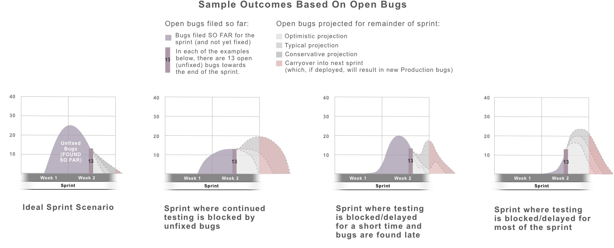

Here are basic concepts of testing, the main types of testing, and some opinions on best practices.
QA's main purpose is to provide insight and communicate risk. It requires speaking up even when it's uncomfortable, and then letting go based on the decision made.
To do that, QA needs to have a keen eye, have empathy for the user (and team), and be the honest broker of information. That's done through bug reports, in meetings, and anywhere you're tracking your testing.
In order to communicate risk before it's too late, you have to be able to evaluate it based on patterns and trends. A key part of that is to avoid over-optimism, and instead provide likely outcomes based on the full context of what you know so far.
For example, let's say you're about 3/4 of the way through a sprint, and the product manager (who's getting nervous about the stories that are still open) asks how many open bugs there are. If you just give the bug count (in this case 13) with no context, the PM doesn't really know whether the sprint is on track or not. Below you can see several different outcomes for that example.
Also, it's important to note that some bugs have more impact than others. One critical bug is usually much more of a problem than a handful of minor tweaks. And some bugs even block your ability to continue testing. So make sure bugs are filed in a way that communicates the severity, and call out any bugs that block testing. This makes it easier for others to gauge the overall status of the sprint or project.
| Kinds of Tests | ||
|---|---|---|
| Unit Tests | Unit testing is built at the code level (usually by developers) to test the smallest units of functionality. It's an important piece of continuous integration. | |
| Integration Tests | Whereas unit tests make sure to test the code in isolation, integration tests check to works with the neighboring modules. It could be white or black box and can be done by devs or QA. | |
| Functional Tests | Deep testing that focuses on the specific changes being made and any impacts it might have on the immediate area. This requires testing several scenarios, including negative tests (tests to verify error handling, failed logins, etc.). It would include both the known test scenarios and exploratory testing to dig deeper and look for more things to test. This also includes different kinds of testing, providing feedback on clear bugs as well as more subjective usability issues. | |
| System Tests | A broader type of testing that's usually done when the functional testing is looking pretty good (although some small preliminary tests can be done while functional testing is still underway). This type of testing spans out to the rest of the system (but isn't focused on how it might impact other systems). | |
| End-to-End (E2E) Tests | An end-to-end test is a system test that emulates a user completing test scenarios from start to finish. For automated tests, this typically means going through the UI (user interface) like a user would, completing the tasks, and then following the transactions through to verify the end results. It might include systems that are downstream. | |
| User Acceptance Tests | This testing is done towards the end of the development cycle by stakeholders or their representatives to ensure that the end result meets the originally-defined needs. Ideally, this kind of feedback and insight is also provided throughout the process with good involvement and communication with the Product Manager. | |
| Test Automation Suites | ||
| Regression Tests | A set (aka suite) of tests that are run routinely to ensure there are no new bugs (regressions) in seemingly unrelated areas of the program. This is usually a large suite of automated tests run, often run daily or with each build and definitely before the release. (If there's no test automation in place, this should still be done by using a consistent list of manual tests to run before each release.) | |
| Sanity Tests | Sanity tests are a subset of regression tests, focusing on a specific area of the program. If desired, these tests can still be fairly deep (testing several scenarios for the given features), but not broad (not testing all areas of the program). Because it's just a subset, it's faster to run, so it's handy in situations where you want to quickly check for problems without waiting for the entire regression suite to run. | |
| Smoke Tests | Sanity tests are a subset of regression tests, focusing on the most critical functionality. The main goals of smoke tests are to keep the list short so it's fast to run, focuses on core functionaly, and is extremely reliable (no false fails). These are very useful in hotfix situations if there's no time to run the full regression suite. The main difference is that it's focusing on the highest-priority tests rather than tests of a certain area of the program. It's also a good candidate to be used as a health-check to monitor test environments. | |
| Specialized Types of Testing | ||
| Security Testing | Although security testing is the responsibility of everyone on the team, there is also a need for highly-specialized security testing. This testing focuses on handling security threats such as SQL injections and XSS (cross-site scripting). This isn't just a task completed by a developer or QA engineer. It's usually done by a cybersecurity specialist who focuses on this exclusively. Security testing entails routinely auditing the entire system, making proactive recommendations in anticipation of various attacks, and serving as a sort of consultant and educator for network administrators, development teams, and QA. | |
| Performance Testing | Performance testing is done to measure how fast (performant) the application runs in normal conditions. This is done by doing a risk assessment, deciding on acceptable metrics, having a consistent set of tests that exercise the code being measured, establishing a benchmark, and re-running the tests (fine-tuning the code as needed). | |
| Load Testing | Load testing is much like performance testing except that, instead of speed, it measures how well the system works under conditions of heavy load (high web traffic, large order volume, etc.). Similarly, stress testing takes it to extreme limits to know the points at which the system is unable to function (and what the results are when that happens). | |
With exploratory (ad hoc) testing, you're discovering the nooks and crannies of a program or feature so you can find new ways to try to break it. This is very different than following the steps of an existing test case. Instead, it's a deep dive to learn all about the feature...figuring out what happens under a myriad of conditions, with different data, in various user states...all so you can increase your understanding and find ways to make it NOT work. Make sure to look at it from different perspectives, taking multiple passes at it to shift focus and look for anomalies.
While the code changes are still being made, get more familiar with how that part of system works (bugs and all) in Production. You'll probably learn a lot, and it will help prepare you for testing. This also prevents last-minute surprises and confusion, and lets you get decisions ahead of time to further define the scope (and either set expectations or build in extra time to address issues).
Do some preliminary exploring/testing before it's officially ready to test. (For this to work, it helps to build a collaborative relationship with developers so it's "safe" for them to share the code ahead of time.) This sneak peek will improve your understanding of the system and will shed light on additional things you'll need (permissions, test data, etc.). With preliminary testing, it helps to check with the developers to see what kind of feedback they'd like at that point in time.
Sometimes there are several hurdles to overcome to get a feature working in an environment where you can access it. Be patient...even after a feature works on the developer's system, it can still take a LOT of work to deploy all the correct code, set with the right configurations, and loaded with the required data. Once you get a an initial test to pass (yay!), it's time to switch gears and try to break it. This takes creativity and persistence. The best way to find bugs is to assume they exist.
When doing functional testing, remember to do negative tests. This kind of testing frequently exposes bugs because it's very difficult to get the conditional logic just right for complex error handling, etc.
When verifying bug fixes, don't just mark them as pass/fail...add comments to clarify what it did. Also make sure it fixed the problem, all of the problem, and nothing but the problem. And after high-level bug fixes, do any additional testing that was previously blocked.
As you're getting close to the end (of the sprint, project, etc.), don't forget some key things that might get overlooked:
So here's the thing...you're never really "done" testing. But here are some useful things to do when the decision is made to deploy:
At some point, you might come across the terms "black box" and "white box" testing. This is just a way to describe what kinds of methods you use when testing...looking under the hood to check for loose connections, etc, or driving the car to see how it behaves when you hit the accelerator, shift gears, etc. The "box" in this analogy is like the code you're testing. The box is considered black if you CAN'T see what's going on inside (because the sides of the box are black). The box is considered white (actually transparent) if you CAN see what's happening inside.
Black box testing: This is testing where you focus on inputs and outputs. It's done without knowing what's happening at the code level. Instead you're trying different scenarios and datasets and looking at the results as clues to determine whether the program is behaving as expected. (If you happen to know what's happening at a code level, it's still black-box testing if you're focusing on the input/output and not actively looking at or focusing on the inner-workings.) Some major benefits to black box testing are that: 1) You tend to focus on user scenarios with various inputs (a variety of product types, different types of users, etc.) that reflect production, and 2) It's often a faster way to find bugs, especially for aggressive timelines.
White box testing: This type of testing is done by looking "under-the-hood" such as the code, stored procedures, etc. As time goes on, testers often learn more skills to gradually have more and more capabilities to do white box testing. However, if you only do white box testing, you're likely to miss bugs that are more easily found with black box testing. A good way to start doing white box testing (even if unfamiliar with reading the code) is to look in GitHub to ensure that any last-minute fixes make it into the final release tag. Or (depending on your application), you might beef up your SQL skills and learn how to read through stored procedures. As you learn more about programming, looking through conditional statements can give a better understanding about the use cases to try.
Can we have test automation for everything?
A better question is, "Should we?" Either way, the answer is some nice variation of "Not really." It's just
not cost-effective to create tons and tons of automated tests that are "brittle" (require constant maintenance
as the UI changes, etc.) or "flaky" (get inconsistent test results). The solution is to use a smart set of tests
that provide a good level of insight.
How long will it take to test?
If you're doing Agile, you'll usually just estimate each story along with the developers. The best way to
give good estimates of test effort is by considering
past examples. Remember to be realistic so that you don't set people up for failure.
Generally speaking, if a story is complex for the developer, it will also be more complex to test. However, that's not always the case. Sometimes the testing is disproportionally easier than the coding. On the other hand, some kinds of changes (such as configuration changes) take more time to test than they take to code. If that sounds odd to you, consider this analogy. Imagine your "team" was asked to put unleaded fuel into a diesel engine (because the PO and team didn't realize what kind of engine it was). It would be really fast to implement the change. It wouldn't even be hard to check that the gas tank now had unleaded fuel. But it would take a fair amount of time to assess the damage to to the fuel system and motor...and even longer to verify all the various fixes that would need to happen.
Another thing to consider when giving estimates is whether the area is already "buggy". When there are existing issues, it can easily double or even triple the test effort...even if those issues aren't fixed. Remember, QA's job is not just to check that a quick change was made, but to test the overall impact (and then verify the bug-fixes that have to be made).
What are the outstanding bugs?
Hopefully the tools you're using to track issues and user stories has a quick way to show the issues getting
worked on. If not (because of the constantly new ways we're doing work), find a way to make it happen even if
you have to get creative. A matrix that can be accessed online by the team is helpful in tracking test case
coverage, communicating the overall progress to stakeholders, and providing links to any resulting issues.
What's the best way for someone to help?
What a great question! On the home stretch of "one of those" projects, it can be tricky to add new folks
without causing extra delays. An effective way to incorporate last-minute help from someone unfamiliar with the
project is to have them verify bug fixes. This allows them to contribute instantly (assuming you've written good
"Steps to Repro" in your bug reports). It's also a great way for them to start learning the system! For large
projects with multiple testers, it helps to prepare by writing a list of scenarios to test, what the expected
behavior is (if it's not obvious), and any other tips that you or others will need to know.
If you want to see some sample bug reports, you can follow the links below.
Try Out Testing (with bug reports)
Dummy Login Page (which simulates a login and then goes to the "Try Out Testing" page)